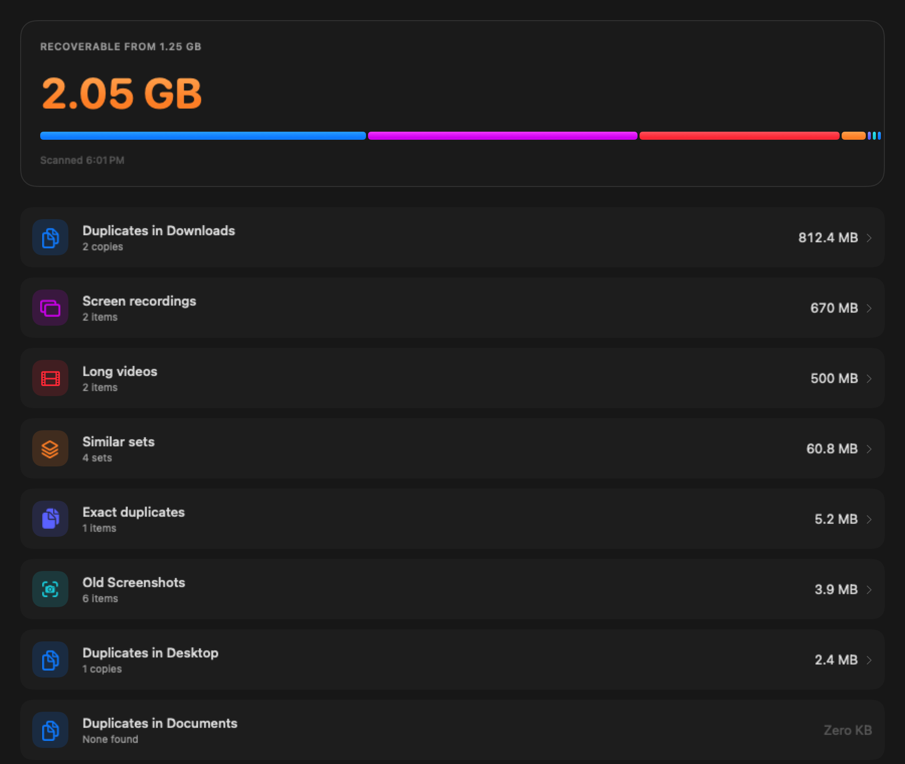
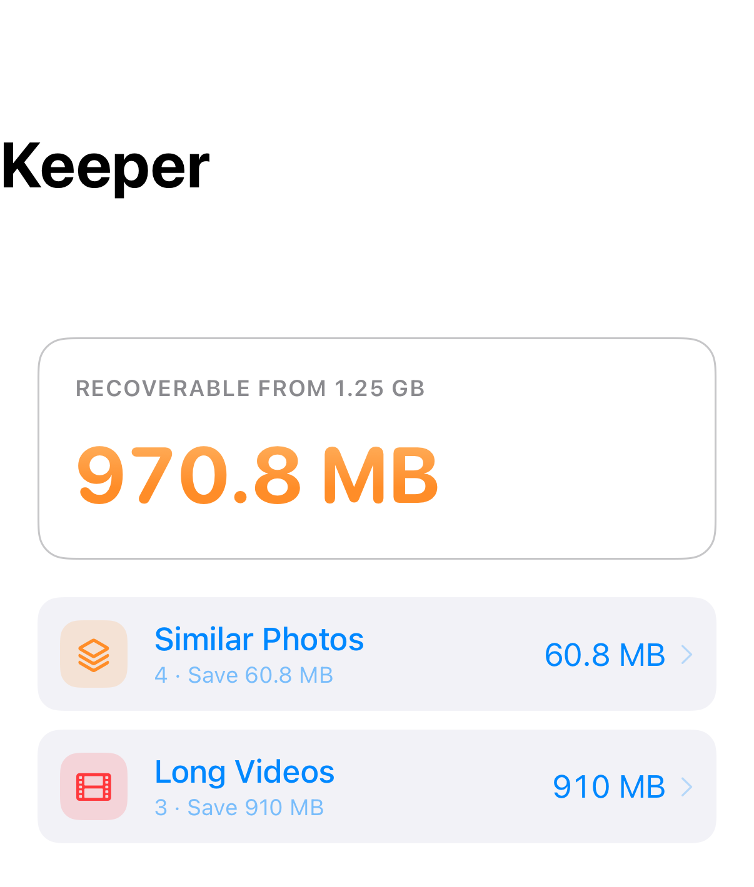

Your signals win outright
Favourited, edited, or filed in an album beats every other rule. If you touched a frame, it’s the keeper — no exceptions, no scoring.
Built and working · not yet on the App Store
Keeper
“iPhone Storage Full” is never the screenshots you meant to keep — it’s the sixteen-frame burst you never culled, the screen recording from two years ago, and the duplicate files sitting in Desktop, Documents and Downloads. Keeper finds all of it, picks the best frame out of every pile, and shows you exactly what it’s about to free before it frees anything. These are real screens from the running app, on both platforms.


Mac and iPhone, same build, same numbers
Biggest win first, always. These five categories are shipped. The numbers below are from a real six-year, 48,000-photo, 214 GB library — nothing unusual about it.
Nothing is double-counted. A blurred frame inside a burst is claimed by one pile only, so the total at the top is a number you can actually reach — not a sum of overlapping estimates. Blurred and dark frames, forwarded media, and a few other categories are designed but not built yet — the full proposal has the complete list and the order they’re landing in.
Shipped today: a short, deliberately simple tie-break — the more sophisticated scoring model in the proposal hasn’t been built yet.
Favourited, edited, or filed in an album beats every other rule. If you touched a frame, it’s the keeper — no exceptions, no scoring.
Among untouched frames, Keeper keeps the one with the larger byte size, then the higher pixel count as the tiebreaker — a cheap, honest proxy for “more information” with nothing to get subtly wrong.
Per-frame quality scoring — blur, exposure, face detection — is designed and written up in the proposal, not implemented. Today’s tie-break is intentionally simpler than that vision.
Every set still keeps at least one frame — that part’s enforced in the model, not just the screen, so a set can’t reach zero keepers no matter what you tap.
Long videos and large images over a size you set can be re-encoded in place instead of removed — picked one at a time or as a batch, queued and tracked from a compression tray, on both platforms.
Camera, date and location metadata survive compression exactly — nothing gets stripped to save the space.
The similarity, hashing and clustering all run against Apple’s on-device frameworks — PhotoKit and Vision — with zero third-party dependencies in the shipped app. No sign-in, no sync, no subscription, nothing to have an account with.
The fuller privacy design — verifiable entitlements, sandboxed storage, an escrow export before a big clear-out — is written up in the proposal. Some of it is already true of the shipped app; some is still on the roadmap, and the proposal says which is which. The short version, as a standalone policy, is here.
Deleting the wrong photo isn’t like deleting the wrong file. So the safety net is the product, not the small print underneath it.
A receipt screen after every clear-out is shipped. Not built yet: an escrow export before a big one — that's in the proposal.
Every category, every screen, the scoring model, the on-device pipeline, and an honest list of what might not work. Plus the design principles that came out of drawing it.
Asking for your email would be a strange way to open a page about not collecting your data. Keeper turns up here and on the App Store when it’s ready — that’s the whole plan.
One Swift core shared across the three platforms, with the whole photo pipeline running on Apple’s own on-device frameworks.